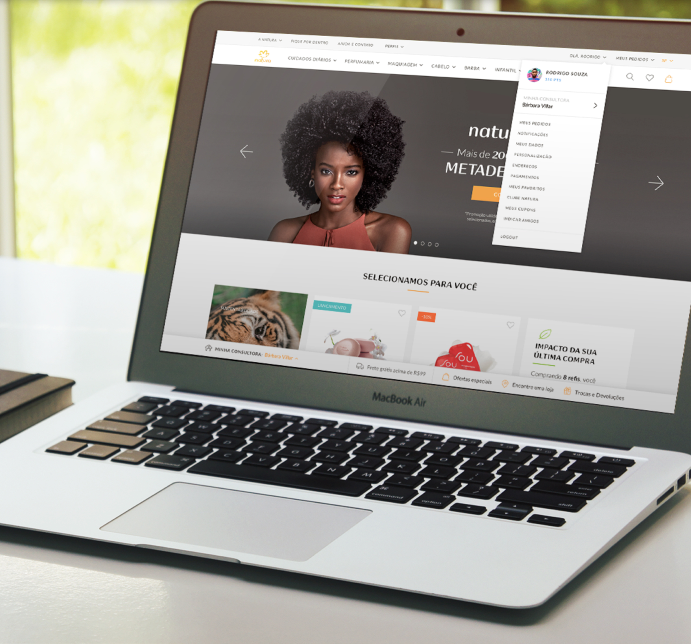
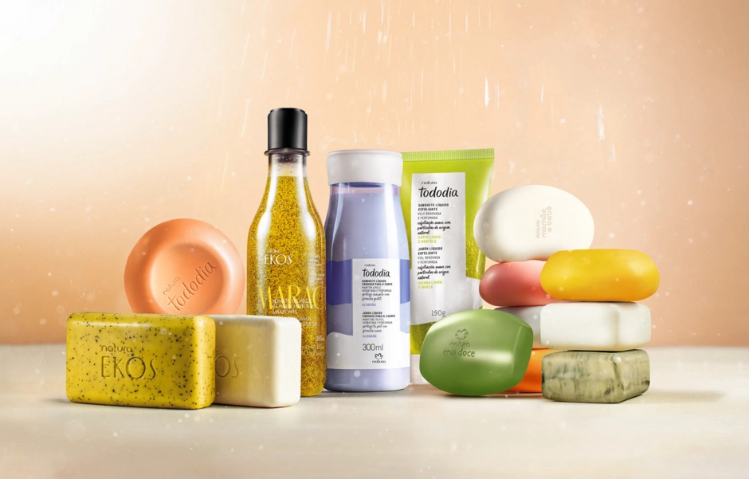

The unification of two separate sites that became a complete redefinition of Natura's digital experience — seamless, engaging, and brand-aligned.
Company
The largest Brazilian cosmetics multinational — with a unique direct-sales model powered by hundreds of thousands of beauty consultants across Latin America. Natura's digital presence needed to bridge the brand's community-driven model with a modern, unified online experience.
The Challenge
Natura operated two separate digital platforms — a consumer-facing e-commerce site and a consultant portal. The two experiences were fragmented, inconsistent, and failed to reflect the brand's warmth and identity. The goal: unify them.
The Work
Challenge 01
Fjord partnered with Natura to expertly craft and redesign an innovative digital experience tailored for e-commerce and digital initiatives. The information architecture was completely overhauled to serve both end consumers and consultants within a single, coherent system.
Challenge 02
A key innovation was integrating the consultant relationship directly into the consumer shopping experience. Customers could see their assigned consultant, access their recommendations, and maintain the personal relationship that Natura's business model depends on — all within the digital platform.

Approach
The collaboration aimed to elevate Natura's online presence, ensuring a seamless and engaging user experience while aligning with the brand's overarching digital objectives. Every interaction was designed to reflect Natura's warmth, its commitment to sustainability, and the human connections at the heart of its business.